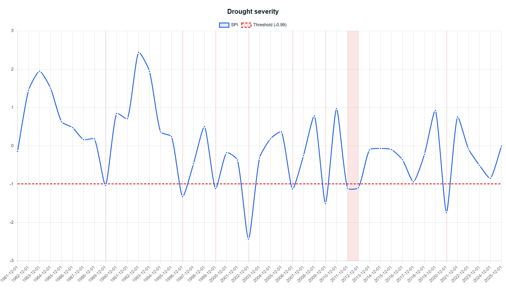
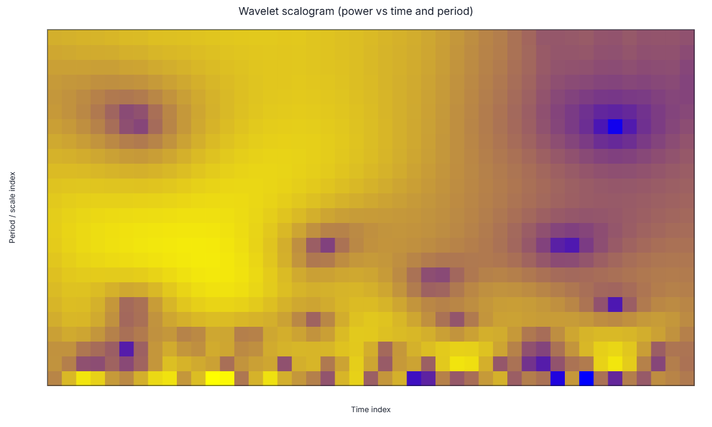

Executive summary
This first-station draft evaluates two ChatGPT interpretation methods for DMAP-AI outputs. Method A uses the chart image only. Method B uses the DMAP-AI structured chart-specific AI request, including selected chart context, dataset context, category rules, numeric diagnostic values, and output-section constraints. The evaluation is separated into drought severity and drought periodicity/variability.
| Item | Value |
|---|---|
| Analysis point | Phoenix, Arizona (metadata label: Selected point (33.4484, -112.0740)) |
| Coordinates | 33.4484, -112.0740 |
| Data source | NASA POWER (free, point-based) / NASA POWER |
| Drought index and scale | SPI, yearly calendar-year aggregation |
| Analysis period and baseline | 1981-2025; baseline: 1981-01-01 to 2025-12-31 |
| Category method | Classic SPI thresholds |
| Drought-event threshold | SPI <= -0.99 |
Methodological note. The uploaded periodicity ZIP contains the wavelet scalogram chart and a structured scalogram AI request. The full JSON also contains the global wavelet spectrum values used to identify the dominant period. For the final paper workflow, the global wavelet spectrum chart should also be exported so chart-only periodicity and structured-request periodicity are matched to the same chart type.
Part A. Drought severity interpretation
A1. Selected chart

Figure 1. DMAP-AI drought severity chart for the Phoenix analysis point. The red dashed line shows the SPI drought-event threshold of -0.99; shaded areas indicate detected drought events.
A2. Method A - ChatGPT chart-only interpretation
From the chart alone, the Phoenix SPI series shows several short drought episodes where the blue SPI line falls below the red threshold. The most visually severe drought occurs around 2002, where SPI drops far below -2.0. Other clear below-threshold drought years are visible around 1996, 1999, 2006, 2009, 2011-2012, and 2020. The shaded region around 2011-2012 suggests the only visibly multi-year drought event. Overall, the chart suggests episodic drought behavior rather than a long continuous drought period.
The chart-only interpretation is useful for identifying the most obvious drought features, especially the extreme 2002 event and the apparent short duration of most drought episodes. However, without the event table or structured context, the exact number of drought events, event magnitudes, minimum SPI values, and the distinction between the worst event and the longest event remain uncertain.
A3. Method B - ChatGPT interpretation using the DMAP-AI structured severity request
Using the structured DMAP-AI severity request, the interpretation becomes quantitative. DMAP-AI defines drought events using the threshold SPI <= -0.99 under the Classic SPI threshold scheme. The run identifies 8 drought events and 9 drought years during 1981-2025. The SPI series ranges from -2.431 to 2.442, with mean SPI near zero (-0.0004), which is consistent with standardized SPI behavior over the selected baseline.
| Event | Period | Duration (years) | Min SPI | Magnitude | Class |
|---|---|---|---|---|---|
| 1 | 1989 | 1 | -1.032 | 0.042 | moderate |
| 2 | 1996 | 1 | -1.326 | 0.336 | moderate |
| 3 | 1999 | 1 | -1.117 | 0.127 | moderate |
| 4 | 2002 | 1 | -2.431 | 1.441 | extreme |
| 5 | 2006 | 1 | -1.123 | 0.133 | moderate |
| 6 | 2009 | 1 | -1.503 | 0.513 | severe |
| 7 | 2011-2012 | 2 | -1.102 | 0.210 | moderate |
| 8 | 2020 | 1 | -1.743 | 0.753 | severe |
The most severe drought event is Event 4 in 2002, with minimum SPI = -2.431 and magnitude = 1.441. Under Classic SPI thresholds, this is an extreme drought event. The longest event is Event 7 from 2011 to 2012, lasting 2 yearly steps, but its minimum SPI (-1.102) places it in the moderate drought range. Thus, severity and persistence are not the same in this case: the worst event is a single-year extreme drought, while the longest event is a two-year moderate drought.
A4. Severity method comparison
| Evaluation item | Method A: chart only | Method B: structured request | Interpretive gain |
|---|---|---|---|
| Most severe drought | Identifies 2002 visually as the deepest negative SPI event. | Quantifies 2002 as Event 4, minimum SPI = -2.431, magnitude = 1.441, extreme drought. | Metadata confirms the visual conclusion and adds exact values. |
| Number of events | Can see multiple threshold crossings, but exact event count is uncertain. | Identifies 8 events and 9 drought years. | Structured request improves completeness and reproducibility. |
| Persistence | Shows most events appear short and 2011-2012 appears multi-year. | Identifies Event 7 as the longest event, lasting 2 yearly steps. | Structured request distinguishes duration from severity. |
| Threshold/method | Threshold line is visible, but category rules are not fully explicit. | Provides SPI <= -0.99, Classic SPI category thresholds, and event-magnitude definition. | Structured request reduces ambiguity. |
| Hallucination risk | May overgeneralize from the extreme 2002 dip or miss small one-year events. | Constrains interpretation to event table, threshold, and active category method. | DMAP-AI reduces unsupported claims and improves discipline. |
Part B. Periodicity and wavelet-variability interpretation
B1. Selected chart

Figure 2. DMAP-AI wavelet scalogram for the Phoenix analysis point. The chart shows wavelet power across time index and period/scale index.
B2. Method A - ChatGPT chart-only interpretation
From the scalogram image alone, the chart shows several localized areas of stronger wavelet power across different time and period indices. The image indicates that SPI variability is not uniform through time; some bands appear stronger in the earlier, middle, and later parts of the record. However, the chart-only view does not provide numeric period labels, global-power rankings, reliability scores, or a formal significance test. Therefore, it is not possible to determine a defensible dominant periodicity from the image alone.
A chart-only interpretation could easily overstate the meaning of visible color patches by calling them drought cycles. A safer chart-only conclusion is that the scalogram suggests time-localized variability at multiple scales, but the chart alone is insufficient to identify an exact dominant period or to claim a stable recurring drought cycle.
B3. Method B - ChatGPT interpretation using the DMAP-AI structured scalogram request
The structured DMAP-AI scalogram request supplies the numeric wavelet diagnostics that are not readable from the chart alone. The strongest and most reliable wavelet band is centered at approximately 9.22 yearly steps, with global power 1.393, coherence 0.988, and reliability 0.976. The top-ranked periods cluster near the 8-12 year range, which supports interpretation as a near-decadal variability band rather than an isolated single-period artifact.
| Period (years) | Power | Coherence | Reliability | Flags | Caution |
|---|---|---|---|---|---|
| 9.22 | 1.393 | 0.988 | 0.976 | none | No extra caution. |
| 10.13 | 1.373 | 0.989 | 0.964 | none | No extra caution. |
| 8.30 | 1.333 | 0.988 | 0.934 | none | No extra caution. |
| 11.04 | 1.308 | 0.990 | 0.921 | none | No extra caution. |
| 11.96 | 1.218 | 0.992 | 0.861 | long_period_low_support | Interpret cautiously. |
This result should be described as a historical variability signal, not as a deterministic drought cycle. The structured request indicates strong internal wavelet support for a near-decadal band, but no formal statistical significance test is provided. In addition, SPI-precipitation coherence should not be interpreted as independent physical validation, because SPI is derived from precipitation. The appropriate interpretation is that the Phoenix SPI series contains a prominent near-decadal variability band, not that drought will recur at a fixed 9.2-year interval.
B4. Periodicity method comparison
| Evaluation item | Method A: chart only | Method B: structured request | Interpretive gain |
|---|---|---|---|
| Dominant period | Cannot identify a numeric dominant period from the scalogram image alone. | Identifies a strongest/reliable band at 9.22 yearly steps. | Structured request supplies the numeric diagnostic evidence. |
| Variability pattern | Shows localized power patches and nonuniform time-scale variability. | Connects the scalogram to global power, coherence, and reliability-ranked periods. | Structured request connects visual patterns to quantitative diagnostics. |
| Cycle claim risk | High risk of saying that Phoenix has a recurring drought cycle based on visible patches. | Frames the result as a variability band and avoids deterministic recurrence claims. | DMAP-AI reduces overinterpretation. |
| Uncertainty | Chart alone does not show significance, reliability, or caution flags. | Provides coherence, reliability, support ratio, flags, and method notes. | Structured request improves scientific caution. |
| Best final-paper chart | Scalogram is useful for time-localized variability, but not ideal for dominant-period chart-only testing. | Structured request includes global spectrum values, but the global spectrum image should be exported for matched comparison. | Final workflow should include the global spectrum chart for periodicity. |
Station 1 research conclusion
For the Phoenix analysis point, the severity case demonstrates that chart-only interpretation can identify the obvious extreme drought year, but DMAP-AI structured context is needed to quantify event count, duration, minimum SPI, drought magnitude, and the difference between severity and persistence. The periodicity case demonstrates a stronger role for structured context: the scalogram image alone cannot support an exact dominant-period claim, while the DMAP-AI structured request identifies a near-decadal variability band and constrains the interpretation to avoid unsupported deterministic-cycle language.
Overall, Station 1 supports the study hypothesis: DMAP-AI structured chart-specific requests improve the precision, reproducibility, and scientific caution of ChatGPT drought interpretation compared with chart-only interpretation. The improvement is modest but useful for simple severity charts, and stronger for wavelet-based periodicity interpretation.
Appendix. Structured-request files used for Station 1
| Item | ZIP path | Role |
|---|---|---|
| Severity request | severity/ai/severity/ai_structured_request.json | Drought severity — SPI line with shaded events |
| Severity backend audit/prompt | severity/ai/severity/ai_backend_audit_prompt.json | Contains output contract, system instruction, prompt text, normalized request, and model metadata. |
| Periodicity/scalogram request | severity/ai/scalogram/ai_structured_request.json | Wavelet scalogram (power vs time & period) |
| Periodicity/scalogram backend audit/prompt | severity/ai/scalogram/ai_backend_audit_prompt.json | Contains output contract, system instruction, prompt text, normalized request, and model metadata. |
Note: The exported Gemini model-response files were present in the ZIP, but the interpretations in this document are written as ChatGPT interpretations using the chart-only view or the DMAP-AI structured request, according to the two-method study design.